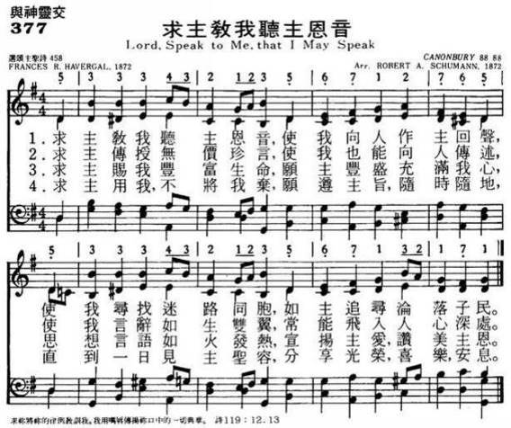

1509 GP434 Lord, Speak to Me (Schuman)
|
|
|
|
1 Lord, speak to me that I may speak
In living echoes of your tone.
As you have sought, so let me seek
Your erring children, lost and lone.
2 Oh, lead me, Lord, that I may lead
The wand'ring and the wav'ring feet.
Oh, feed me, Lord, that I may feed
Your hungry ones with manna sweet.
3 Oh, teach me, Lord, that I may teach
The precious truths which you impart.
And wing my words that they may reach
The hidden depths of many a heart.
4 Oh, fill me with your fullness, Lord,
Until my very hearts o'erflows
In kindling thought and glowing word,
Your love to tell, your praise to show.
5 Oh, use me, Lord, use even me,
Just as you will, and when, and where
Until your blessed face I see,
Your rest, your joy, your glory share.
|
1.求主教我听主恩音，使我向人做主回声，
使我寻找迷路同胞，如主追寻沦落子民。
2.求主传授无价珍言，使我也能向人传述，
使我言辞如生双翼，常能飞入人心深处。
3.求主赐我丰富生命，愿主丰盛充满我心，
思想言语如火发热，宣扬主爱赞美主恩。
4.求主用我不将我弃，愿遵主旨随时随地，
直到一日见主圣容，分享光荣喜乐安息。
|
|

https://www.zanmeishige.com/tab/26009.html?songbook=1&index=434
|
|
|
|
Lord, speak to me, that I may
speak 普321，颂新376，颂416，生477
https://hymnary.org/text/lord_speak_to_me_that_i_may_speak

Notes
Scripture References:
st. 1 = Jer. 1:9
st. 3 = Isa. 50:4
st. 4 = 1 Cor. 12:4-11
Francis R. Havergal (PHH
288) wrote this text at Winterdyne, England, on April 28, 1872. With the
heading "A Worker's Prayer" and with a reference to Romans 14:7 ("none of us
lives to himself alone"), the seven-stanza text was first published as one
of William Parlane's musical leaflets. It was then republished in Havergal’s Under
the Surface in 1874. The Psalter Hymnal includes the
original stanzas 1, 2, 4, and 7 in modern English.
"Lord, Speak to Me" is a
prayer that God will speak to, lead, and teach each of us so that we may do
the same to others who need Jesus Christ (st. 1-3). The text also expresses
our commitment to full-time kingdom service ("use me, Lord . . . just as you
will, and when, and where") , an ongoing task that ultimately leads us to
eternal "rest," 'Joy," and "glory" (st. 4).
Liturgical Use:
Worship that focuses on missions and evangelism (during Pentecost season)
and on the "equipping of the saints for ministry."
--Psalter Hymnal
Handbook, 1988
=================
Lord, speak to me,
that I may speak. Frances R. Havergal. [Lay Helpers.]
Written, April 28, 1872, at Winterdyne, and first printed as one of
Parlane's musical leaflets in the same year. In 1874 it was published in
her Under the Surface, and in 1879 in Life Mosaic. In the
original manuscript it is headed “A Worker's Prayer. ‘None of us liveth to
himself.' Rom. xiv. 7." This hymn has become very popular, and is highly
esteemed by those engaged in Christian work.
--John Julian, Dictionary
of Hymnology (1907)
|
Short Name: |
Frances R. Havergal |
|
Full Name: |
Havergal, Frances Ridley, 1836-1879 |
|
Birth Year: |
1836 |
|
Death Year: |
1879 |
Havergal, Frances
Ridley,

daughter of the Rev. W. H.
Havergal, was born at Astley, Worcestershire, Dec. 14, 1836. Five years later
her father removed to the Rectory of St. Nicholas, Worcester. In August, 1850,
she entered Mrs. Teed's school, whose influence over her was most beneficial.
In the following year she says, "I committed my soul to the Saviour, and earth
and heaven seemed brighter from that moment." A short sojourn in Germany
followed, and on her return she was confirmed in Worcester Cathedral, July 17,
1853. In 1860 she left Worcester on her father resigning the Rectory of St.
Nicholas, and resided at different periods in Leamington, and at Caswall Bay,
Swansea, broken by visits to Switzerland, Scotland, and North Wales. She died
at Caswell Bay, Swansea, June 3, 1879.
Miss Havergal's scholastic
acquirements were extensive, embracing several modern languages, together
with Greek and Hebrew. She does not occupy, and did not claim for herself, a
prominent place as a poet, but by her distinct individuality she carved out
a niche which she alone could fill. Simply and sweetly she sang the love of
God, and His way of salvation. To this end, and for this object, her whole
life and all her powers were consecrated. She lives and speaks in every line
of her poetry. Her poems are permeated with the fragrance of her passionate
love of Jesus.
Her religious views and theological bias are distinctly set forth in her
poems, and may be described as mildly Calvinistic, without the severe
dogmatic tenet of reprobation. The burden of her writings is a free and full
salvation, through the Redeemer's merits, for every sinner who will receive
it, and her life was devoted to the proclamation of this truth by personal
labours, literary efforts, and earnest interest in Foreign Missions.
[Rev. James Davidson, B.A.]
Miss Havergal's hymns were
frequently printed by J. & R. Parlane as leaflets, and by Caswell & Co. as
ornamental cards. They were gathered together from time to time and published
in her works as follows:—
(1) Ministry of Song, 1869; (2) Twelve Sacred Songs for Little
Singers, 1870; (3) Under the Surface, 1874; (4) Loyal
Responses, 1878; (5) Life Mosaic, 1879; (6) Life Chords,
1880; (7) Life Echoes, 1883.
About 15 of the more important of Miss Havergal's hymns, including "Golden
harps are sounding," "I gave my life for thee," "Jesus, Master, Whose I am,"
"Lord, speak to me," "O Master, at Thy feet," "Take my life and let it be,"
"Tell it out among the heathen," &c, are annotated under their respective
first lines. The rest, which are in common use, number nearly 50. These we
give, together with dates and places of composition, from the Havergal mss.
[manuscript], and the works in which they were published. Those, and they are
many, which were printed in Parlane's Series of Leaflets are
distinguished as (P., 1872, &c), and those in Caswell’s series (C.,
1873, &c).
Tune Information
|
Title: |
CANONBURY |
|
Composer: |
Robert Schumann (1839) |
|
Meter: |
8.8.8.8 |
|
Incipit: |
53334
32123 56712 |
|
Key: |
G Major |
Notes
Derived from the fourth
piano piece in Robert A. Schumann's Nachtstücke, Opus 23
(1839), CANONBURY first appeared as a hymn tune in J. Ireland Tucker's Hymnal
with Tunes, Old and New (1872). The tune, whose title refers to a
street and square in Islington, London, England, is often matched to
Havergal's text.
CANONBURY has a simple
binary form, which consists of two versions of the same long melody. Sing in
parts, ideally with a sense of two long lines rather than four choppy
phrases, possibly with a fermata at the end of the first long line.
Robert Schumann (b.
Zwickau, Saxony, Germany, 1810; d. Endenich, near Bonn, Germany, 1856)

wrote no hymn tunes
himself, though a few of his lyrical melodies were adapted into hymn tunes
by hymnal editors. One of the greatest musicians of the Romantic period,
Schumann did not at first seem destined for a musical career. Although he
was a precocious piano player, his mother and his guardian insisted that he
study for a legal career. From 1828 to 1830 he studied law at Leipzig and
Heidelberg Universities, but much of his time was consumed with music and
poetry. From 1830 until his death Schumann devoted his life to music. After
a finger injury terminated his concert career as a pianist in 1832, he
turned completely to composition. Schumann composed successfully in many
genres but became especially famous for his piano works and song cycles. In
1840 he married Clara Wieck, whom he had known since 1828; she was a famous
pianist and composer in her own right who inspired many of Schumann's songs.
He suffered from depression for much of his adult life and in 1854 after an
unsuccessful suicide attempt, was admitted to a mental institution, where he
later died. Schumann founded the magazine Neue Zeitschrift für Musik and
edited it for ten years.
--Psalter Hymnal
Handbook, 1988
凌風

芬妮．海弗格爾
（Frances
Ridley Havergal, 1836-1879）
“獻己於主”（Take
My Life, and Let it Be），差不多在所有的聖詩選集中都可找到。其作者芬妮．海弗格爾（Frances
Ridley Havergal, 1836-1879），生在宗教氣氛濃厚的家庭，父親維廉．海弗格爾（Rev.
William Henry Havergal）是英國聖公會的牧師；母親珍恩（Jane），生了三男三女，芬妮是家中最小的一個。
她的一生只短短的四十二年，但她所寫的聖詩，卻流傳廣遠而持久；她也是相當有成就的詩人，擅寫描述自然及抒情的詩，並且能夠歌唱，當慕迪與散奇的佈道風靡英倫時，曾商請芬妮歌唱，但她以健康不佳，不能如願。
芬妮的父親維廉牧師，博覽群書，兼擅音樂，只是一生大半是體弱多病，在1841年的時候，以至不得不中年退休。但在四年後，他的健康恢復了很多。1845年，他能夠到伍斯特（Worcester）的聖尼哥拉座堂（St.
Nicholas Cathedral），任為主牧。但他的妻子竟然先逝。
芬妮雖然從小就到教堂，表現得很敬虔。全家都熱心於教會的事工，她跟着兩個姐姐，去探訪教區貧窮的人。作牧師的父親，在健康條件許可之下，經常有家庭禮拜。他們家中收寄宿的學生，每個主日在聚會中讀希臘文新約；父親也鼓勵孩子們參加討論。但那些跟重生得救並不是一回事，在宗教環境中長大的孩子，仍可能缺乏個人的信仰。芬妮就是如此，她對於永恆的歸宿沒有把握，內心一直沒有平安。
她的母親對年幼的芬妮說：“你是我最小的女兒，我為你耽心過於別的孩子。我求聖靈引導保護你。記得：只有耶穌基督的寶血，能夠潔淨你，使你蒙神喜悅。”1848年，芬妮十二歲，母親患癌症纏綿病榻二年多後，離她而去，使她受很重的打擊。她記得，母親臨終的時候，祈禱願芬妮預備自己，成就神在她身上的旨意。
1851年二月，一位朋友凱羅蘭（Caroline
Cooke）來訪，有機會同芬妮談話。她問芬妮，如果基督今天再臨，你將如何面對祂：“你是否接受耶穌作你的救主，將你的靈魂交託給祂？”芬妮深沉的思想這個問題。不久，她忽然起來回到房內，信靠耶穌為她個人的救主：“在頃刻間，似乎天地變得光明，她進入喜樂當中。以後幾天，喜樂日益增加。我一次又一次，我將自己完全奉獻給主。”一年多後，這屬靈母親成為芬妮的繼母。
生當十九世紀，英國奮起宣教的時代，芬妮熱心於支持宣教事工，也積極推動基督教女青年會（YWCA），並聖經印刷，贊助學校中的宗教教育，關懷貧苦兒童的教育。不過，她一生勤奮不懈的致力寫作，特別是隨時思維聖詩。1873年，傷寒流行，芬妮受到感染，瀕近死亡，有很長的一段時間，身體虛弱。有一次，去訪問一所男童學校。同行的朋友進去了，她再無力邁步，倚在門外的牆上休息。到朋友出來的時候，居然發現她在一張紙上，寫下聖詩草稿：“金琴響起”（Golden
Harps are Sounding）。
在她繼母捨己殷勤的照顧下，芬妮終於康復。這一年，也是她生命中轉捩性的一年，在聖詩創作上收穫豐碩。
她的父親於1870年逝世；她的繼母凱羅蘭於1878年也離開世間。1879年六月三日，英國的女聖詩作家，芬妮．海弗格爾，走完她人生的旅程，到她所事奉的主那�堙C
芬妮．海弗格爾虔誠愛主，她的詩歌，多是表達奉獻愛主的情懷。我們今天所唱的“我曾捨命為你”（I
Gave My Life for Thee），“我所有全歡然奉獻”（In
Full and Glad Surrender），就是這樣真摯的願望。
芬妮的心中，充滿對主的愛；但早年性格內向，不敢宣之於口。有一個相識的女孩子，十分可愛；芬妮幾次想對她見證，一次又一次見面，總說不出口。隔了有一段時間，再度相遇的時候，那女孩顯然成為一個活潑喜樂的基督徒。她對芬妮說：“海弗格爾小姐，我長久尋求救主耶穌，但不敢啟齒；你不知道我的內心，多麼盼望你向我開口見證！我本來應該是你的果子！”
這件事，給芬妮很深的印象，使她再不願失去為耶穌見證的機會。芬妮的詩歌：“我今屬主”（Jesus,
Master, Whose I Am），宣示她立心為主所用的心志。常為人唱頌的“投效主陣營”（Who
Is on the Lord's Side?），可見這可佩弱女子的堅定英勇心志。
http://www.ebaomonthly.com/ebao/readebao.php?a=20080323
安樂無休 Like a
River Glorious
主所賜的平安，彷彿江河流，
使我心覺歡欣，永無盡無休；
主的恩典完全，越受越豐滿，
主的安樂長存，永世不間斷。
藏主膀臂之下，災禍不能臨，
仇敵我不懼怕，因它不能侵；
實在一無罣慮，心中甚穩固，
沒有一點煩惱，因有主保護。
各樣歡樂憂傷，皆是主安排，
就是遇見災難，主也不離開；
我要依靠救主，萬事交托主，
只要信心堅固，主必定幫助。
（副歌）
我依靠耶和華，滿心得安樂，
照著主的應許，句句都不錯。
 (請點耳機收聽)
(請點耳機收聽)
這首詩歌是英國女詩人海雯格（Frances Ridley Havergal, 見一月一日）所作，她的聖詩被認為是最甜美的心聲，她也被尊為「神聖的詩人」。
這首詩歌又名「完全平安」（Perfect Peace），是根據以賽亞書48:18「……聽從我的命令，你的平安就如河水，你的公義就如海浪。」
作曲者孟敦（James Mountain, 1844-1933）是一位英國牧師和音樂家，早期牧會時因健康欠佳而去職，休養期間曾在德國大學進修。
1870年慕迪和孫基訪英，孟敦所作的曲譜深受孫基的影嚮。 他先在英國全國佈道，1874-82年，繼往世界各地佈道。
1889年，他因對浸禮看法改觀，而加入浸信會牧會直到退休。 他寫有許多著作，並為宗教刊物執筆，譜有十四首聖詩。
神的應許永不落空，祇是祂的時間非人所能意料。 雖然當時我們不能明白，但事後必知祂從不誤事。 史麗芙（Natalie Sleeth）有一首很美的詩歌「應許的詩」（Hymn
of Promise），由汪美譯成中文，其歌詞如下：
球根�堙A有美的花朵；種子�堙A有蘋果樹；
蠶蛹�堙A有隱藏應許；小毛虫，會成蝴蝶！
在那寒冷的天，已有春天在等待，
萬事都有定期定時，唯有父神知道。
沉默中隱藏著詩詞，在尋找優美旋律；
黑暗中有黎明曙光，帶給你我新希望。
過去時光引導將來；雖然我們不明白，
萬事都有定期定時，唯有父神知道。
我們終了，神的開始，我們有限，神無限。
我們懷疑，神永信實，必朽身體會復活。
我們死亡，神賜永生，在主�堙A得勝有餘。
萬事都有定期定時，唯有父神知道。
萬事都有定期定時，我們不明白，唯有父神知道。
(請點耳機收聽)
中英文聖詩集參考
英文歌名 Like
a River Glorious
頌主新歌 395
頌主新歌(中英雙語) 400
教會聖詩 360
生命聖詩 330
歡欣讚美 737
聖徒詩集 493
聖詩 333
青年聖歌II 58
http://www.hymncompanions.org/Nov/17/stream.php
") |
Born: December 14, 1836, Astley, Worcestershire, England.
Died: June 3, 1879, Caswall Bay, near Swansea, Wales.
Buried: Astley, Worcestershire, England, the city of her
birth. On her tombstone was the Scripture verse she claimed as her own:
“The blood of Jesus Christ cleanseth us from all sin” (1 John 1:7). |
") |
|
詩人小傳
有一天我們去參觀一座海濱燈塔。我們看見了那燈塔和燈的布置，就很覺希奇：這燈雖然很大，却沒有我們所想像的那樣大，然而它那偉大發光的能力却使我們驚奇，原來它是被放在它周圍的三棱鏡和透光鏡�堶情C藉著科學方法準確的計算，把它安置得很適當，這些聯合的光綫使燈光加强了數百倍集中起來而射出海面直達三�堣坏~。
若是我們能看見那些藉著神的恩典在不同的人�媊捔I著的聖靈的燈，我們就更要希奇的發覺：雖然在有的人身上點著的光似乎比在其他的人身上大一點，但是這個差別若和他們所流露出來祝福的光的廣大影響力，所具有的差別比較，就不足道了。有的人很難將祝福供應出去，有的人却能使自己成一條祝福的運河，很豐富的供應屬靈的亮光和幫助，最要緊的一件事，就是用什麽方法來處理光。若是我們三棱鏡安置得適當，只要用一個稍微大一點的燈泡就能做成一個偉大的燈塔。
現在我們要來看一點關于海弗格爾的生平。她是一位一生奉獻給神而大有恩賜的姊妹。我們先提到一些使她一生能爲神而活的屬靈安排，和三棱鏡幷透光鏡的配置。雖然她住在海外，她那聚光點却沒有被毀滅，仍能在那遙遠的地方，從我們的記憶和她的詩歌�媯o出救恩之光，使許多人的心得著屬靈的祝福、生命和喜樂。神所爲她配置的三棱鏡是：一個虔誠的家和愛主的父母；幷許多向著主忠誠信實的朋友；她自己的天才和人所對她天才的培養。她特長的音樂天才，是她父親——著名的音樂編著家——所培植成功的；她對于詩詞歌賦的喜愛，使她終身樂于把豐富靈感寫成優美的詩歌；她身體的軟弱使她養成一個倚靠神的靈，幷喜愛與許多被神所得著的人交往：而這些人的榜樣所給她的影響和感動，是超過人所能估計的。
在這些三棱鏡之外，更重要的還有些張力聚光的透光鏡將許多顔色的光調和而放大。就是在她�堶惜@個如饑如渴地要認識神幷要得著神的心靈，這個饑渴使她有系統地、不自私地來讀神的話；幷且更使她實在地經歷神的應許，這些都是使她奇妙地得到那救恩之光的原因，也是將這光在祝福和能力��强烈地照射出去的原因。
海弗格爾是一八三六年十二月十四日生于英格蘭的愛司特壘（Astley
in Worcestershire，England）。那時，她父親是當地的教區長。她在一八五一年二月間，確定的信靠了基督。任何事奉主的人，若知道她幼年的疑難，幷她追求神的迫切心願，就自然會想要幫助她清楚地認識神和神的應許；但神却照著他自己的時候和方法來帶領她。她曾很鄭重地定意，要行在她已有的亮光中，但她經常因著不能完全活出神的應許，而感覺對自己十分不滿。
她在屬靈的事上操練進步得很快，就如她那時所寫的詩說她學會了“當失望臨到時，那個失望必是神的安排。”她也說到“禱告的虧欠”；今天看見這些事的人，是何等的少。當她臥病在床時，神教導她學習等候是何等有價值的時間。若是一個人要被神所用，就必須如此。雖然有這些，她仍是不滿意，就寫信給〈全爲耶穌〉（“All
for Jesus”）的著者說：“我盼望在我心中有更深更豐富的教導。”那時就有幾句關于寶血洗淨，幷主耶穌保守的能力的話臨到了她。她提到那個時候就這樣說：“是在一八七三年，十二月二十二日的那天，我頭一次清楚的看見真實奉獻的祝福。我看見這祝福就像閃電一樣的閃耀。幷且你所看見的事你就永不能說沒有看見。在完全蒙祝福之前，必須完全地順服。起頭的時候神給我看見他兒子耶穌的血洗淨我們一切的罪；後來又給我很清楚的看見，那位曾這樣洗淨我的，有能力保守我潔淨，所以就絕對的將自己奉獻給他，幷絕對的倚靠他來保守我。”她的姊妹論到她這個時候，寫著說：“那些沒有陽光的深谷，從此永遠過去了；今後平安和喜樂要從她�堶扈F出，幷且在聖靈的教導之下，越涌越深，越涌越廣。”以後她自己也寫著說：她看見約翰一書一章七節的能力，特別是當她看見“洗淨”一詞是用繼續而永遠的現在式時，她�堶悼R滿了喜樂，那是她一生最喜樂而熱切的一段時間。她說：“除了在天上之外，我不能因盼望別的而像那時的情形一樣。”
以後神一直奇妙的使用她，在她爲神歌唱的時候，她對那些在歌唱上爲神所用的人的勸告，很像孫蓋（Sankey）先生所說的。她說：“我勸你們要徹底的熟練一首詩，使它成爲你自己的一部分，將你的全人浸在它�堶情A然後祈求神使它成爲他的信息才可以。”再說她如何引用聖經的字，下面的一個例子，可以描寫出來：她把書當禮物送給那些在她生病時來看顧她的人，在她所送的書內，只寫著馬太福音二十五章四十節的一個“既”字。
她很清楚的認識：應當謹慎使每一分鐘的光陰都用在神的需要上；當神召你去作一件更好的事時，你就不要將時間花費在你所看爲好的事上；當神召你去作一件最高最好的事時，你就不要將過多的時間花費在更好的事上。她覺得她的生活沒有完全像她該有的生活，雖然她沒有意思要退後，但她對神和屬乎神的事，却沒有敏感的接觸。她審察自己就發覺她天天有系統地讀莎士比亞（Shakespeare）的著作，不過是追求知識以裝飾自己。除此以外，她不能找出別的東西。她這樣追求屬世的學問，對于她受過教育的頭腦，在已往是很自然的，但現在却使她屬靈感覺的敏銳變作遲鈍模糊。因此她就用她自由的意志將這件事放下。她這樣作，在別人看爲愚拙，但在她却看爲神的智慧。放下不久，她那已斷了的屬天交通之弦，便又接起來，幷且比前更爲美好。
她熱切地禱告著去考查幷研讀神的話，這樣作的結果在她著作的任何地方都能看見。她掘聖經之礦比采金的礦工掘金礦更要熱切，不只對英文聖經是如此，就是對希伯來文和希臘文聖經也是如此。她所愛的人常聽見她歡樂著喊說：“哦！我已經有了這樣的尋見！”
她的著作很感動人。耶利米書十五章十九節給了她很深的印象：“你若將寶貴的，和下賤的分別出來，你就可以當作我的口。”她何等奇妙的倚靠神藉著她說話。她說：“我總不能由我自己來寫詩歌。我信我的主會給我一個思想，幷將一兩個樂調感動我，使我抬起頭來，歡樂著感謝他而寫下去。這就是我所寫的詩歌的來源。”
一個活在倚靠的靈�堙A幷活在神的話和禱告�堛漸糽R，就不能不一直到永遠全是爲著神。她的詩歌和著作，今天仍然活在一班人的心中，就是到那些在世界上被重視的人都湮沒以後，它們還是存留。她的才幹、教育、雄心、以及她所有的一切都被煉淨、被純潔成爲三棱鏡和透光鏡，將神彰顯于世界。
到她臨終時，這個奉獻給神的生命其結果是何等的顯著：“她抬頭向上定睛望著，好像她看見了主；真的，沒有比屬天的情形更美的東西，能將這樣的榮光返照在她的臉上。有十分鐘的工夫，她的面貌充滿喜樂。我們看著她，她像是在與她的主相會、談話。後來她又試著唱詩，當她唱出一個很高而甜美的音調‘他…’之後，她的聲音就唱不出來了。在那時她的弟兄將她的靈魂交托在她的救贖主手中，我們寶貝的姊妹便心滿意足的通過幔子到主那�堨h了。”
但願她的生命和她的著作，將神的光顯明照耀在人生路上的客旅，使他們能更佳美地生活幷事奉他。雖然我們不能同得別人的天才和學識，但是讓我們記得，當我們完全信靠他的應許時，就沒有一種放大的三棱鏡和透光鏡能與神的應許相比。但願我們肯讓神用他的應許來圍繞我們，使我們這平凡的光能被放大，成爲千萬人的祝福。
詩歌介紹
現在我們從她所寫的詩歌，列出三首代表作介紹于後：
—、〈從我活出祢的自己〉“Live
out Thy Life within Me”
（《聖徒詩歌》第314首）
（一）從我活出祢的自己，耶穌，祢是我生命。
對于我的所有問題，求祢以祢爲答應。
從我活出祢的自己，一切事上能隨意。
我不過是透明用器，爲著彰顯祢秘密。
（二）殿宇今已完全奉獻，已除所有的不潔。
但願祢的榮耀火焰，今從�堶探N露襭。
全地現在都當肅穆，我的身體今進供。
作祢順服安靜奴僕，只有被祢來推動。
（三）所有肢體每個時刻，約束、等候祢發言。
準備爲祢前來負軛，或是不用放一邊。
約束，沒有不安追求，沒有緊張與受壓。
沒有因受對付怨尤，沒有因懊悔倒下。
（四）乃是柔軟、安靜、安息，脫離傾向與成見；
讓祢能够自由定意，當祢對我有指點。
從我活出祢的自己，耶穌，祢是我生命。
對于我的所有問題，求祢以祢爲答應。
這是海弗格爾所寫詩歌中最有深度也是屬靈價值最高的一首詩，可以說是在她屬靈生命登峰造極時的代表作。這首詩歌幷不像她所寫其他的詩歌那樣詞藻優美，受人贊賞，但從其內容你能發現，這首詩歌是作者多年跟隨主而得著的；對主極寶貴的認識和經歷，以及長期經過十架工作的雕刻和對付，而有的結晶。
第一節詩一開始就把神救贖我們的目的和屬靈生命的意義，幷一切屬靈經歷的最終目的，那樣透明幷美麗地化成詩句，短短幾句話使我們摸著對神旨意一個明亮的啓示。
“基督是我們的生命”這是經歷屬靈生命的一個最重要的秘訣。因爲得著了聖靈的啓示，所以一開始她就發出了一個神聖的呼求：“從我活出祢的自己”因爲“耶穌，祢是我生命”，接著說“對于我的所有問題，求祢以祢爲答應。”這正是在聖靈的大光中認識了“基督是一切”的意義，而發出的那樣有力的反應和答案。她重提說“從我活出祢的自己”接著她表明自己是一個預備好的器皿，不惜出任何代價順服主，讓主在“一切事上能隨意”，“我不過是透明用器，爲著彰顯祢秘密。”這樣她把神創造幷救贖我們的旨意，寫得是那樣的透明、剔亮、有力。
第二節即從啓示的境界轉入了主觀的經歷中：因爲看見了神榮耀的啓示。讓基督內住在我們�堶惕@我們的生命，所以“殿宇今已完全奉獻，已除所有的不潔”，這個“已”字是何等有力。所以“但願祢的榮耀火焰，今從�堶探N露襭”，在這一個最神聖的時刻中“全地現在都當肅穆，我的身體今進供”，爲的是“作祢順服安靜奴僕，只有被祢來推動”這話實在太好了，即使我們講一篇很長的信息，也不容易趕上這一句話，那樣明亮的說出一個屬靈生命的表現。
第三節說到我們正在匠人手中被製作時所有的態度。“準備爲祢前來負軛，或是不用放一邊。約束，沒有不安追求，沒有緊張與受壓，沒有因受對付怨尤，沒有因懊悔倒下。”這幾句話足以媲美大衛詩篇五十一篇認罪詩的靈。
第四節說到一個經過十架之後的美麗生命：“乃是柔軟、安靜、安息，脫離傾向與成見，讓祢能够自由定意，當祢對我有指點。”末了仍結束在這一個因看見神异象而有的神聖呼求上：“從我活出祢的自己，耶穌，祢是我生命，對于我的所有問題，求祢以祢爲答應。”像這樣一首詩，不僅給我們看見海弗格爾屬靈生命的造詣，也是歷代聖徒最寶貴的産業。
二、〈爲
祢，我捨生命〉 “I
Gave My Life for Thee”
（《聖徒詩歌》第297首）
（一）爲你，我捨生命，爲你，我流寶血；
將你洗得潔淨，使你與神和諧。
爲你，爲你，我捨生命，爲我，你捨甚情？
（二）爲你，我費多年，憂患苦難遍嘗；
好使快樂永遠，你也得以安享。
爲你，爲你我費多年，爲我，你費幾天？
（三）我父光明之家，我的榮耀寶座，
爲你，我都撇下，來到此地飄泊。
爲你，爲你，我撇這些，爲我，你何所撇？
（四）爲你，我受痛苦，過于你口能述；
受了極大辛楚，救你脫離陰府。
爲你，爲你，苦受許多，爲我，你受什麽？
（五）爲你，我從天家，爲你，我已帶來：
救恩無以復加，赦免、自由、慈愛。
爲你，爲你，我帶許多，你帶什麽給我？
（六）主，我獻上生命，和我所有時間，
完全聽祢使令，脫離己的鎖鏈。
爲我，爲我，祢的全休。爲祢，我棄所有。
這也是海弗格爾極有名的一首詩歌。有一次在她父親的書房中，她看見一幅主耶穌受苦的圖畫，這幅畫的底下，有一句話說：“爲你，我舍生命”，當她正注視這幅圖畫的時候，主的愛大大激勵她的心，所以她就寫了這首詩，後來她又嫌這首詩不能將主的愛描述得透徹，不能說出她當時的心情，因而投之于火爐，但剛剛燒去一個角，她又把它拿了出來，後來被她父親發現（她父親是個非常好的基督徒）大大的贊賞，幷且受感動，而爲她配譜。
三、〈收我此生作奉獻〉 “Take
My Life，and Let It Be”
（《聖徒詩歌》第313首）
（一）收我此生作奉獻，毫無保留在祢前；
收我光陰幷時日，用以榮耀祢不置。
（二）收我雙手爲祢用，因愛催促才舉動；
收我兩足爲祢行，踪迹佳美傳祢名。
（三）收我聲音來歌唱，天上榮耀的君王；
收我唇舌作用器，前來述說祢信息。
（四）收我金銀和所有，不敢分毫有私留；
收我聰明幷才幹，前來作成祢心歡。
（五）收我意志永屬祢，從今不再爲自己；
收我的心作寶座，祢住�堶掘馴O我。
（六）收我愛情，哦，我主，只在祢前才傾吐；
收我全人，靈、魂、體，一切活著爲著祢。
（副）爲我荊棘冠冕祢肯戴，
爲我釘死苦架祢受害，
爲祢，我願獻上我命與我愛，
爲祢，事祢到萬代。
這首詩歌是海弗格爾一八七四年在英國的Areley House的時候寫的，有一次她寫信給一位朋友說：“你願不願意知道這一次奉獻的故事。”她說，那一次她到一位朋友的家�堨h做客，住了五天，在那家�堣@共有十個人，其中有幾個人還沒有悔改信主。有幾位雖然是基督徒，但是他們幷沒有屬靈的喜樂，屬靈生命非常低落。她住在他們家中，就爲著那一家十個人迫切禱告主說：“主，既然祢把我放在這�堙A就把這屋子�堛漱H都交給我。”那天晚上，她迫切禱告，聖靈就在那�塈@了奇妙的工作，到了深夜，有人來對她說：“那邊房�塈@女教師的兩位小姐都在痛哭不止。”于是她就過去，把救主的福音告訴她們，帶領她們歸向主，得著救恩，幷且和她們禱告，直到她們把自己完全奉獻給主，願意一生爲主活著。在那個時候，海弗格爾自己也被聖靈的喜樂充滿，她們樂得不能自禁，以致于不能上床睡覺，整夜她們在一起贊美主，她也把自己再重新奉獻給主。正當那時，這首詩的詞句就在她心�堣@直浮現出來，“收我此生作奉獻，毫無保留在祢前；收我光陰幷時日，用以榮耀祢不置。”那一次她不過寫了三節，到四年之後，海弗格爾又寫信給那位朋友說：“神又帶領我往前走了一步，除了主以外，我不保留任何的事物，我把我所有的金銀首飾都賣掉了，把一切得著的都歸給主，我只留下一個別針，天天戴在身上，那是母親給我的記念，除此之外，一切都已歸給基督。”所以從第四節再往下：“收我金銀和所有，不敢分毫有私留；收我聰明幷才幹，前來做成祢心歡。”在這首詩�堶情A第一節說到她把自己一生都奉獻給主，接著是雙手、兩足；第三節說到她的聲音、唇舌；第四節說到金銀和聰明；第五節說到她的意志和她的心；第六節說到她的全人，靈魂體一切都爲著主。直到今日，這首詩歌還是一直被主所使用的鋒利工具。
海弗格爾姊妹一生寫了很多的詩，除上列三首外，還有一些也常爲聖徒所喜愛的，今將詩題列在後面：
四、〈他不能救自己〉（《聖徒詩歌》第84首）
五、〈金琴在天響起〉（《聖徒詩歌》第133首）
六、〈向我說話〉（《聖徒詩歌》第640首）
七、〈像長江大河〉（《聖徒詩歌》第493首）
八、〈誰是在主這邊？〉（《聖徒詩歌》第666首）
九、〈倚靠救主耶穌〉
（“I Am Trusting Thee，Lord
Jesus”）
十、〈耶穌寶血，何等寶貴〉
（“Precious，Precious
Blood of Jesus”） |
https://tochrist.org/Hymns/FrancesHavergal-T.htm
https://hymnary.org/person/Hankey_Kate
作者汉基
(K.Hankey，1834一
1911)是英国一位银行职员的女儿，在中学读书时，就对儿童主日学工作非常感兴趣，义务担任主日学教员，长大后又专门为商店的服务员们组织查经班。她曾一度到非洲去看护瘫痪的弟弟，从切身的经验中，她深深感到人类需要互助，并要把主的道理广传出去。她生平喜欢写作，著有好几本宣传福音的诗文集。